When an AI agent makes dozens of UI changes on one branch, I review them one at a time. Each change has a name and a reason, I can see it in the running app, and I keep or drop it on its own.
Made with Claude Opus 5.5. The workflow and the results are mine. Claude Opus 5.5, Anthropic's AI model, wrote this page and built the demo site, its screenshots and the example data, working from my notes and feedback.
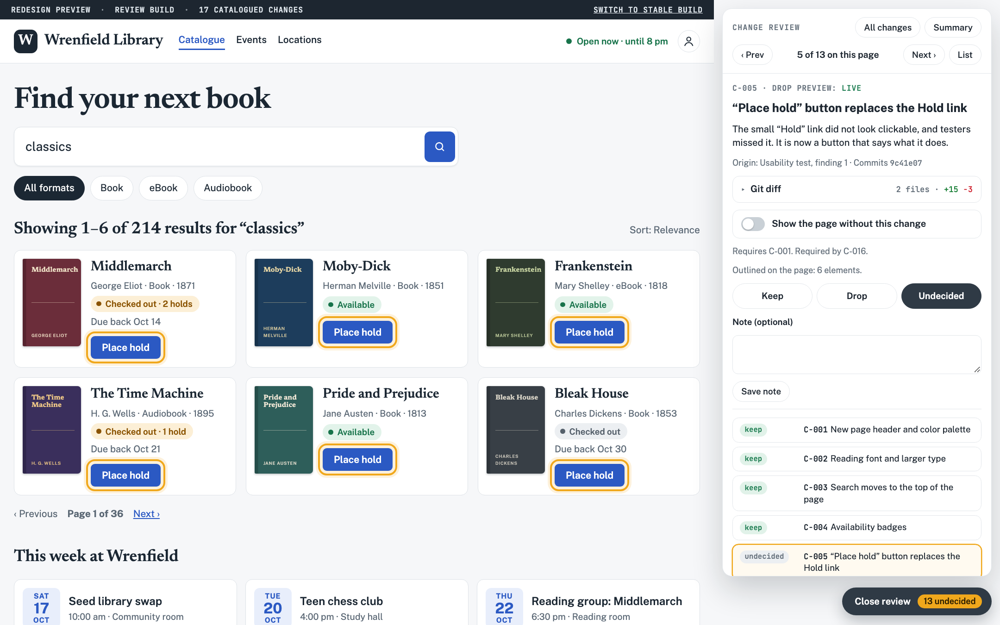
Coding agents are good at UI work, and they are prolific. Ask for a redesign and you get back a branch with fifty or eighty changes: spacing, copy, layout, new components, removed ones, a reworked form.
Reviewing that branch leaves two bad options. You can accept or reject the whole thing, which throws away good work along with the bad. Or you can read the code diff, which is slow and still doesn't show you what each change looks like or why the agent made it.
I wanted a third option: see every change in the running app, understand it in plain language, and decide on each one separately.
Every change the agent makes gets an entry in one file, such as review/changes.json. Each entry has an ID, a title, a plain-language note on what changed and why, the pages and element it affects, the commits that make it up, and the other changes it depends on.
{
"id": "C-005",
"title": "“Place hold” button replaces the Hold link",
"what_why": "The small “Hold” link did not look clickable,
and testers missed it. It is now a button
that says what it does.",
"pages": ["catalogue", "book"],
"element": "[data-ch~='C-005']",
"commits": ["9c41e07"],
"depends_on": ["C-001"],
"live_preview": true
}The entry behind the screenshot at the top. The agent writes each entry as it works, so the reason is recorded when the decision is made.
The preview build of the app gets a review tray. It's off by default and never ships to production. Open it on any page and it lists only the changes that touch that page. Click one and the app outlines the affected elements and shows the agent's explanation next to them.
The catalogue already lists each change's commits, so the card can also show their git diff. The plain-language reason and the code that implements it sit on the same card.
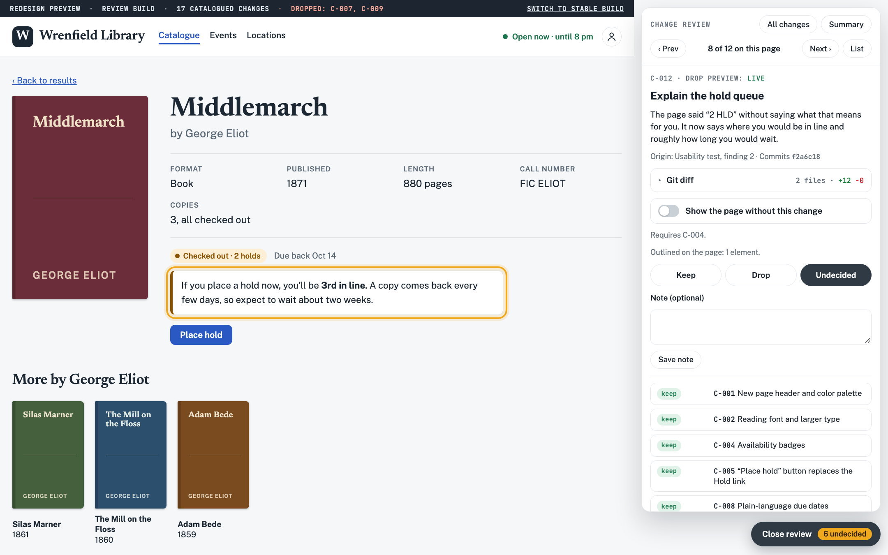
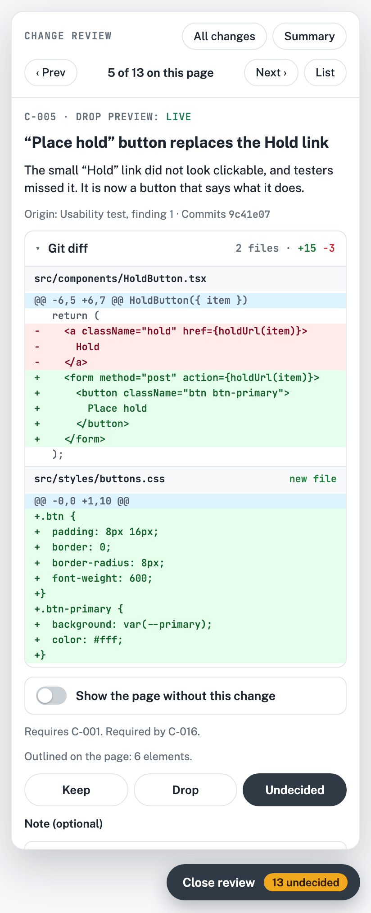
Each change is marked Keep, Drop or Undecided. Where it's feasible, a Show without switch puts the element back the way it was, in place, so I can compare before deciding. Dropping a change takes it off the page right away, so the preview always shows the result of the decisions so far. Changes that can't be previewed live say why. Decisions are saved on the server with notes, and they can be exported.
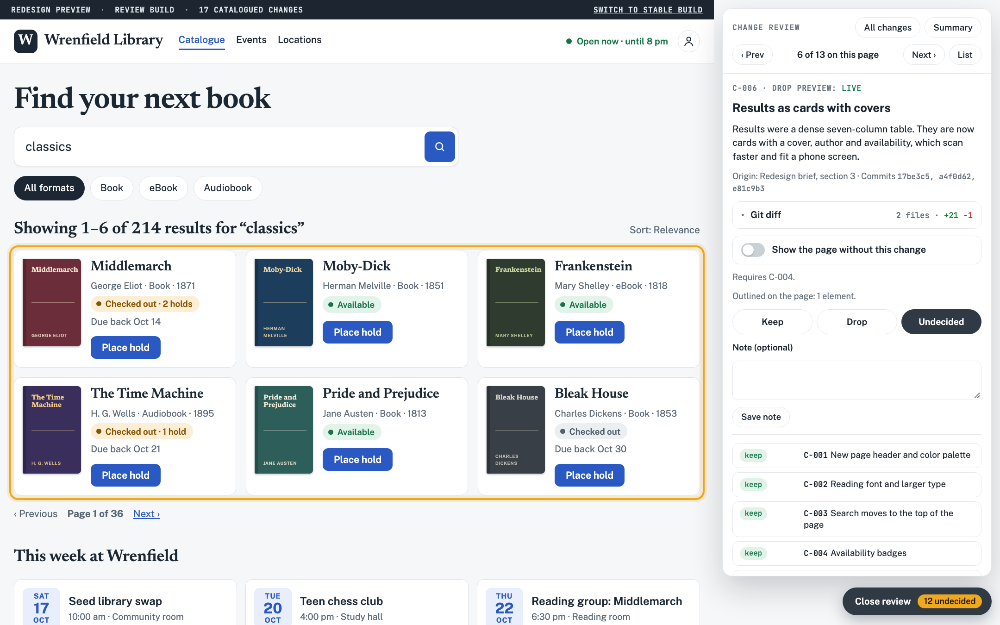
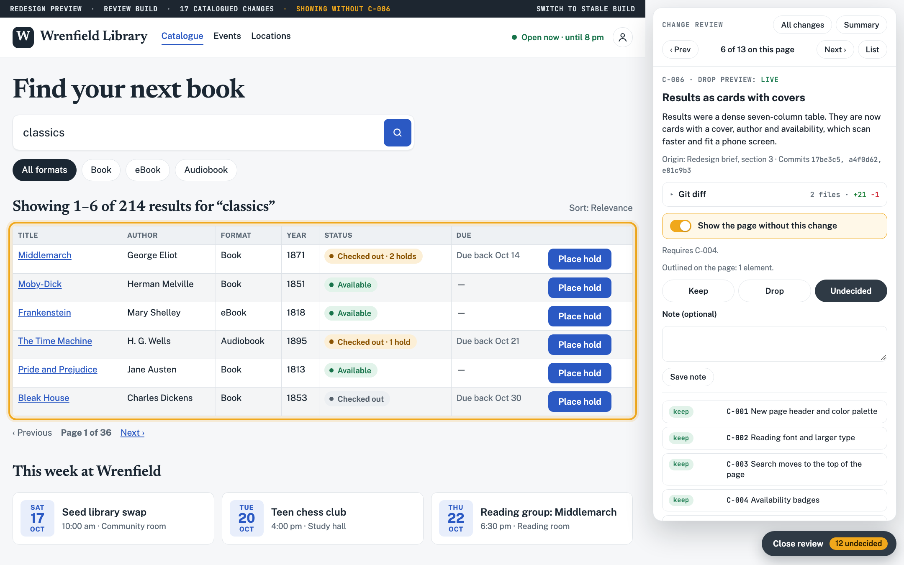
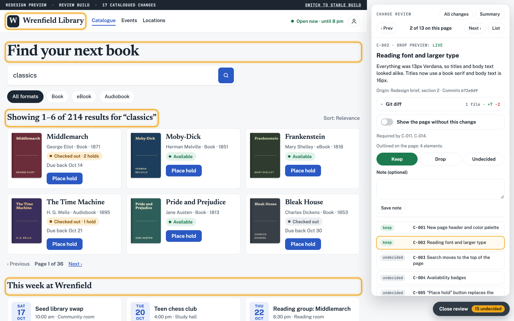
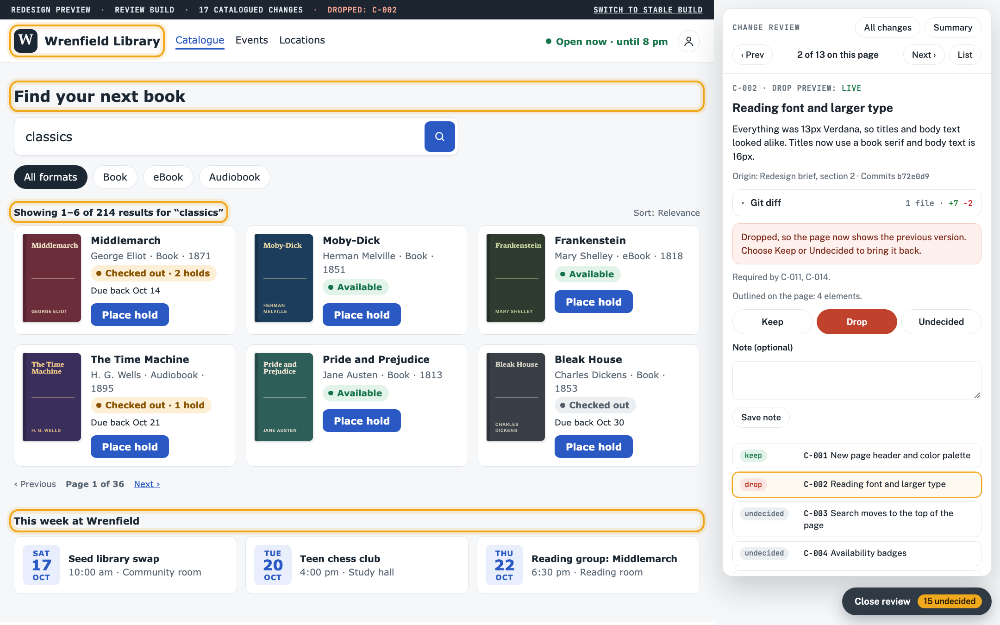
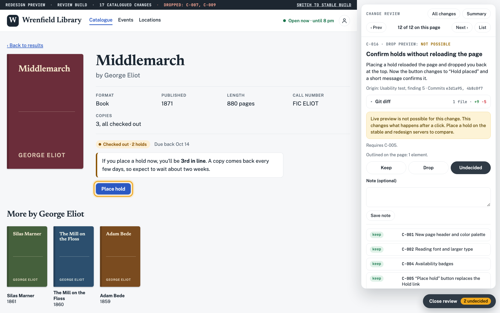
Two copies of the app run at the same time on separate local ports: the last stable version and the agent's redesign. With one on each monitor, I can click through the same flow in both. This covers the changes the tray can't preview live, and it shows the overall feel of the redesign, which no single line item does.
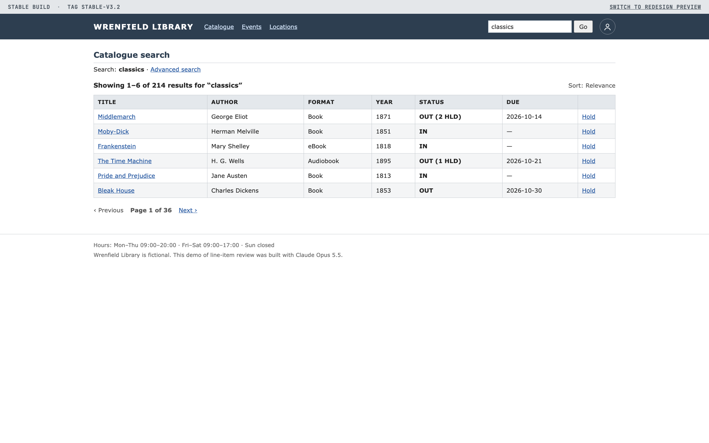
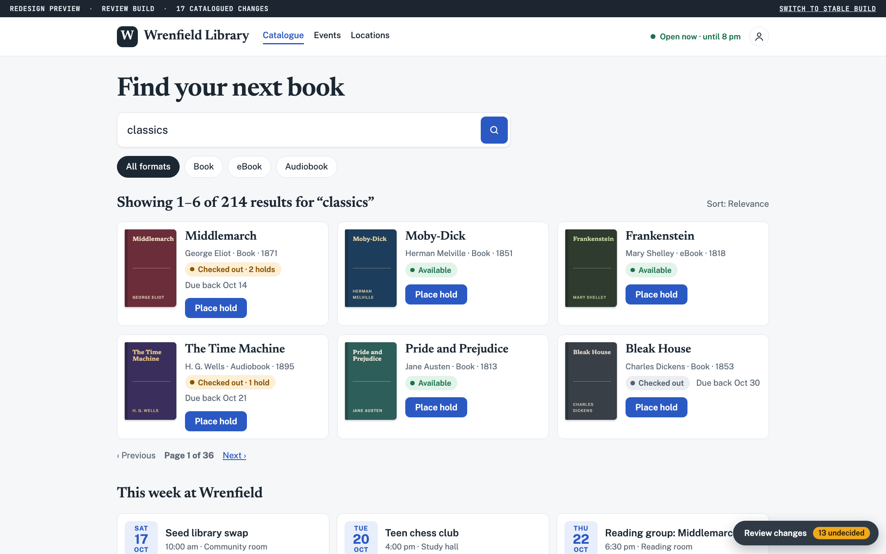
Once every change has a decision, the agent doesn't edit the redesign branch. It starts a fresh branch from the stable tag and applies only the kept changes, in dependency order, with tests. Nothing merges until I've reviewed the result and merged it myself.
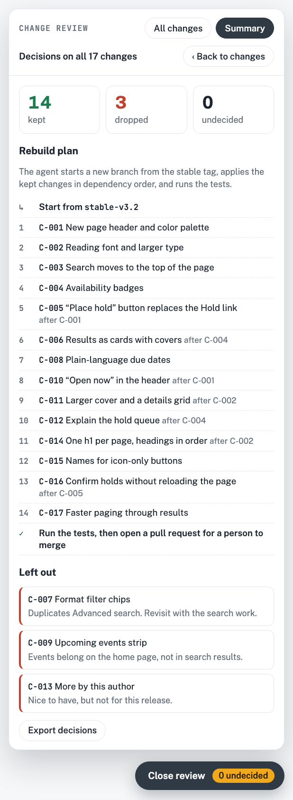
At that size, reviewing the whole branch at once isn't realistic. With a catalogue, each decision is small: one change, one page, one reason.
Every change the agent makes is named, explained, traceable to its commits, and individually vetoable.
Start with the catalogue alone. Ask the agent to record every change as an entry with an ID, a plain-language reason and its commits. That one file already makes review faster. Add the tray, the side-by-side servers and the rebuild step as the volume of agent work grows.
The screenshots on this page come from a small demo site you can click through.
Wrenfield Library is made up. It has 17 catalogued changes and a working review tray, and the decisions you make there stay in your browser.
This page, the demo site and everything in them were made with Claude Opus 5.5 in Claude Code.